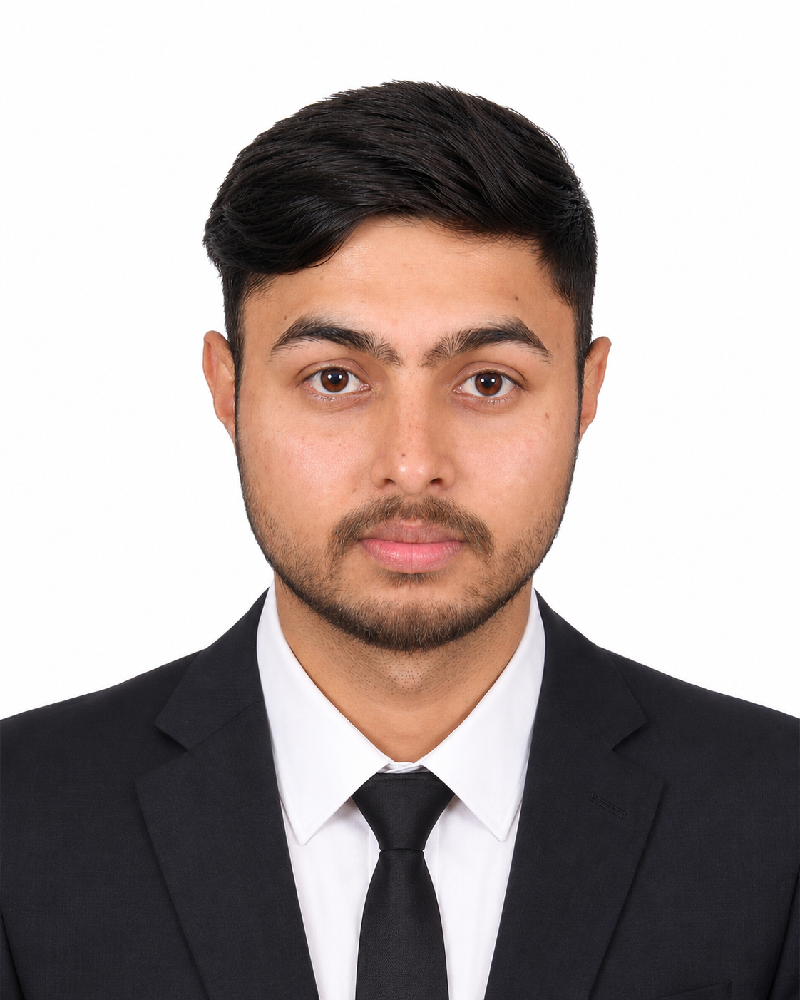
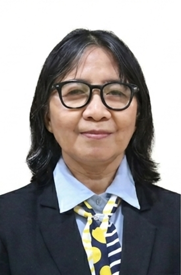
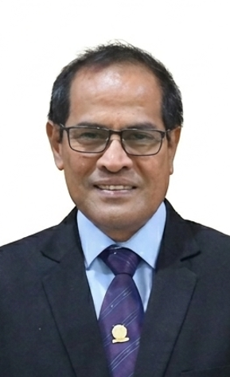
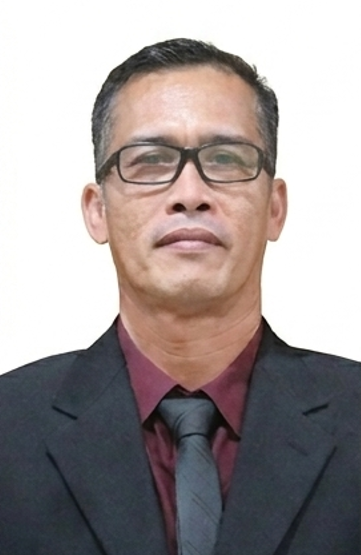
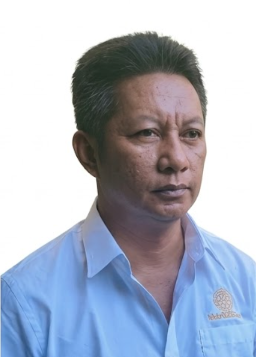
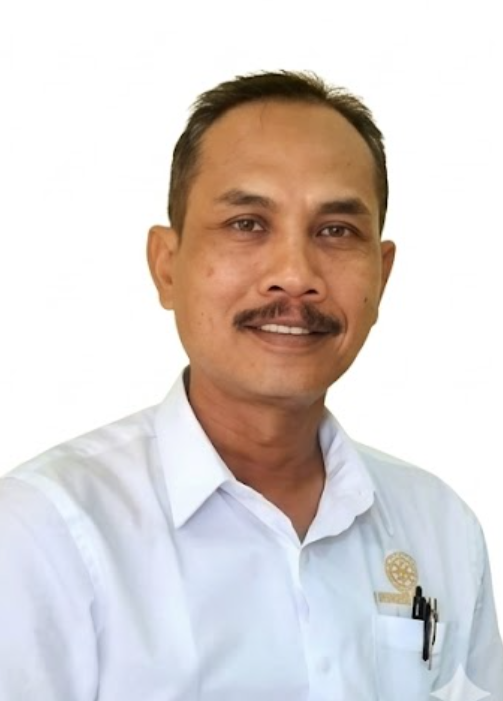
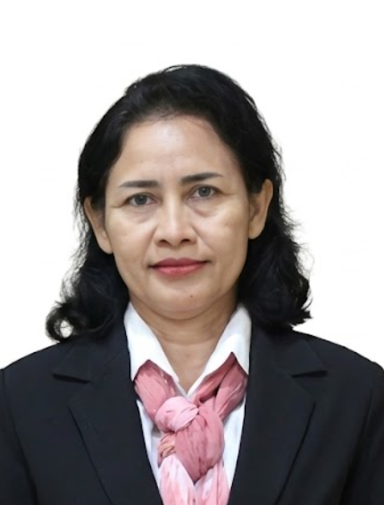

Organizing
Organizing & Local Committees
The symposium is organized by a joint committee led by Udayana University, HKUST, and Korea University, with strong support from our local organizing committee in Bali.
Udayana University
The Hong Kong University of Science and Technology
Korea University
Organizing Committee Organizing

Prof. Tjokorda Gde Tirta Nindhia
Chair
Udayana University

Prof. Samir Kumar Khanal
Co-Chair
The Hong Kong University of Science and Technology

Prof. Jae Woo Lee
Co-Chair
Korea University

Dr. Surendra K.C
Conference Secretariat
The Hong Kong University of Science and Technology

Dr. Dandan Dong
Conference Co-Secretariat
Korea University

Mr. Layas Thapaliya
Member
The Hong Kong University of Science and Technology

Mr. Jang Ho Lee
Member
Korea University

Miss Gahyun Shin
Member
Korea University
Local Committee Local
Prof. Dr. Tjokorda Gde Tirta Nindhia, S.T., M.T.
Pembina Utama/IVe
Udayana University

Prof. Ir. Linawati, M.Eng.Sc., Ph.D.
Pembina Utama Muda/IVc
Udayana University

Prof. Ir. I Nyoman Budiarsa, M.T., Ph.D., IPU.
Pembina Utama Madya/IVd
Udayana University

Prof. Ir. Kadek Diana Harmayani, S.T., M.T., Ph.D., IPM. ASEAN.Eng.
Pembina/IVa
Udayana University

Ir. I Gusti Ketut Sukadana, S.T., M.T.
Pembina Utama Muda/IVc
Udayana University

Prof. Dr. Ir. Dewa Ngakan Ketut Putra Negara, S.T., M.Sc.
Pembina Tk. I/IVb
Udayana University

Dr. Ir. I Made Parwata, S.T., M.T.
Penata Tk. I/IIId
Udayana University

Dr. Ida Ayu Rai Widhiawati, S.T., M.T.
Penata Tk. I/IIId
Udayana University

Dr. Ir. Anak Agung Istri Agung Sri Komaladewi, ST.MT
Penata Tk. I/IIId
Udayana University